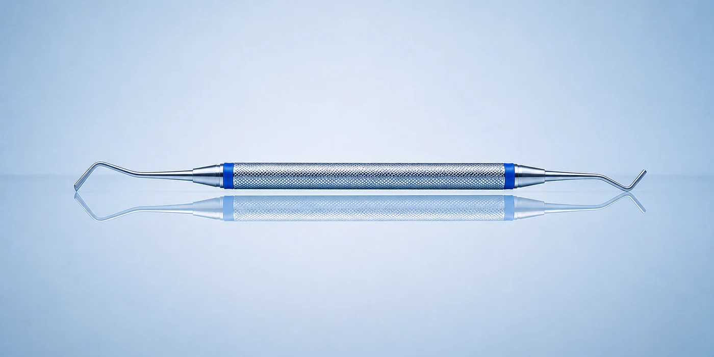
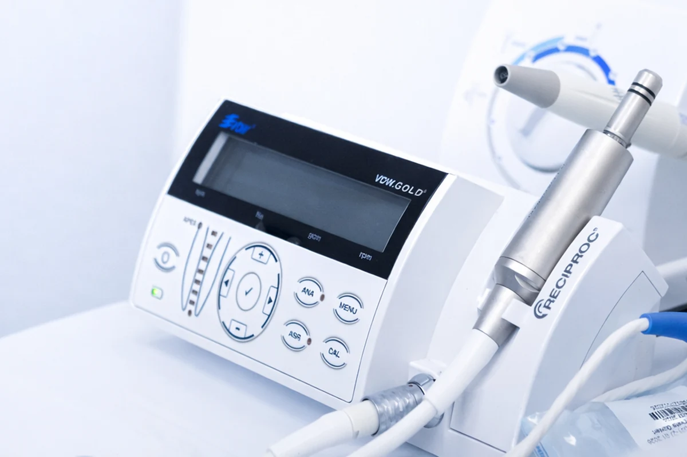
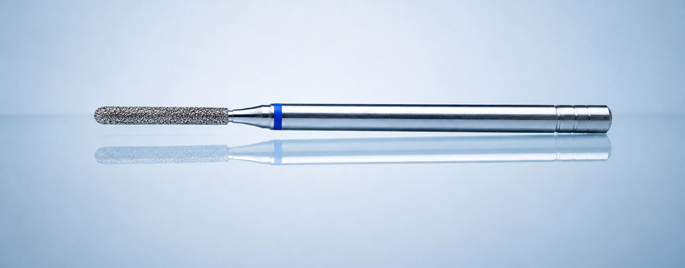
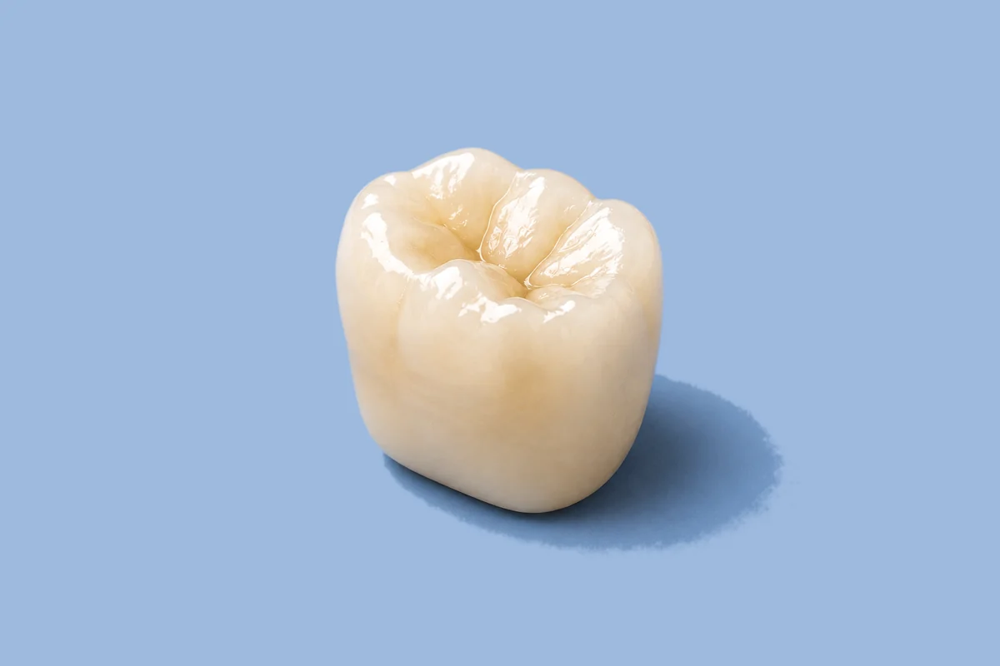
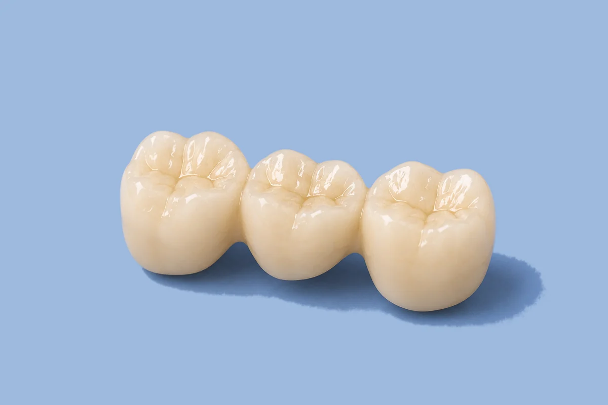
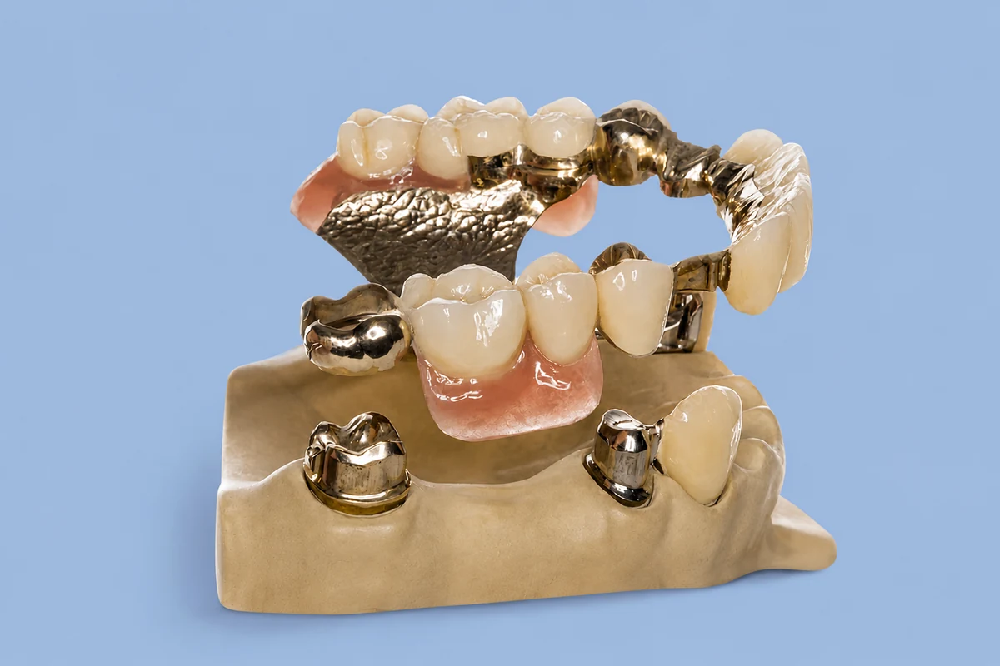
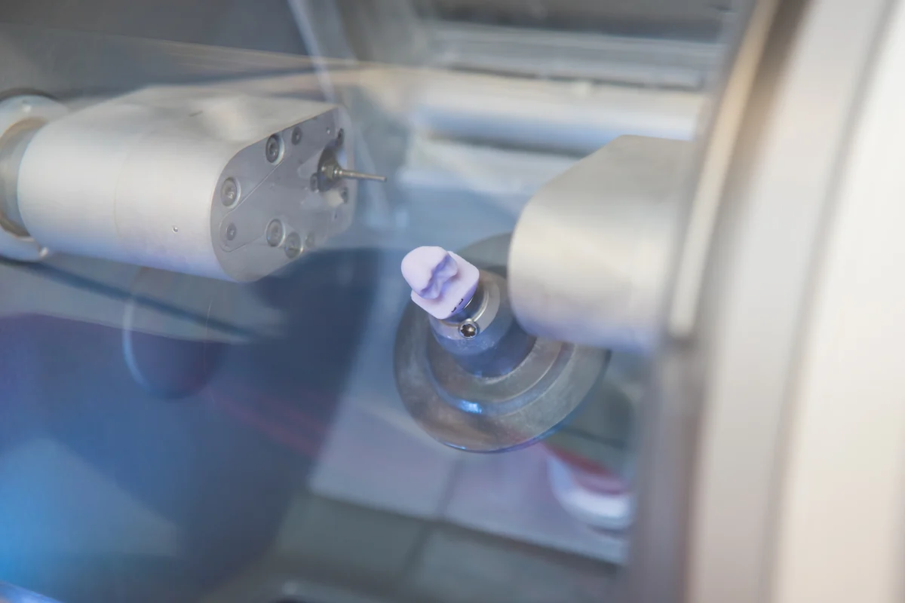
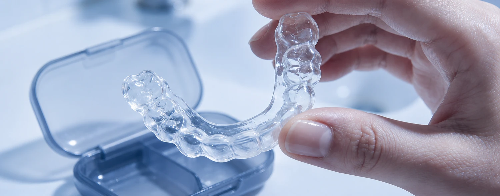
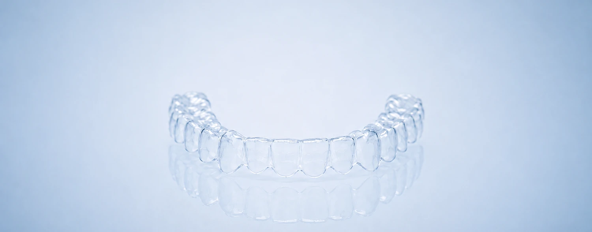
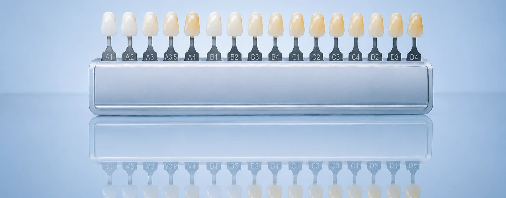

Zahnmedizin mit Überblick und Bedacht
Unser Leistungsspektrum reicht von Vorsorge und Zahnerhalt bis zu umfangreicherem Zahnersatz, Implantatversorgungen sowie funktionellen und ästhetischen Behandlungen. Dabei geht es nicht darum, möglichst viel zu behandeln, sondern die Lösung zu finden, die medizinisch sinnvoll ist und zu Ihrer persönlichen Situation passt. Wir untersuchen sorgfältig, erklären die Möglichkeiten verständlich und planen gemeinsam mit Ihnen.

Was wir außerdem für Sie tun
Neben unseren Schwerpunkten decken wir das gesamte Spektrum der Zahnmedizin ab, von der Vorsorge bis zur umfassenden Sanierung. Fahren Sie über eine Karte, um mehr zu erfahren.
Seniorenzahnmedizin
Zahnmedizin, die sich dem Menschen anpasst, nicht umgekehrt.
Mehr erfahren →Wir nehmen uns Zeit, berücksichtigen Vorerkrankungen und Medikamente und behandeln schonend. Auch Prothesen, Haftprobleme und trockene Mundschleimhaut gehören zu unserem Alltag.
Angstpatienten
Sie müssen sich für Ihre Angst nicht rechtfertigen.
Mehr erfahren →Viele unserer Patienten kennen dieses Gefühl. Wir erklären jeden Schritt, hören zu und arbeiten in Ihrem Tempo. Sie entscheiden, wann es weitergeht, und Sie dürfen jederzeit unterbrechen.
CEREC: Zahnersatz in einer Sitzung
Ein Termin statt zwei, ohne Abdruck und Provisorium.
Mehr erfahren →Inlays, Kronen und Teilkronen aus Keramik fertigen wir digital in unserer Praxis an. Sie gehen mit dem fertigen Zahn nach Hause, in Farbe und Form auf Ihr Gebiss abgestimmt.
Implantatgetragener Zahnersatz
Chirurgie beim Spezialisten, Prothetik und Betreuung bei uns.
Mehr erfahren →Das Setzen der Implantate übernehmen erfahrene Chirurgen, mit denen wir seit Jahren zusammenarbeiten. Planung, Krone, Brücke oder Prothese darauf und die weitere Betreuung liegen in unserer Hand.
Laserbehandlung
Aphten und Herpes gezielt und nahezu schmerzfrei behandeln.
Mehr erfahren →Mit dem Diodenlaser behandeln wir Aphten und Herpesbläschen punktgenau. Meist lassen die Schmerzen schneller nach und die Stelle heilt früher ab.
Amalgamsanierung
Alte Füllungen raus, moderne Materialien rein.
Mehr erfahren →Amalgamfüllungen tauschen wir unter Schutzmaßnahmen gegen zahnfarbene Materialien aus: Komposit, Keramik oder Gold. Wir beraten Sie in Ruhe, welche Lösung für Sie sinnvoll ist.
Komplette Zahnsanierung
Wenn vieles auf einmal ansteht, planen wir Schritt für Schritt.
Mehr erfahren →Was ist dringend, was hat Zeit, was gehört zusammen? Sie bekommen einen klaren Behandlungs- und Kostenplan, bevor wir beginnen. Und Sie bestimmen das Tempo.
Kinderzahnheilkunde
Der erste Zahnarztbesuch prägt. Wir lassen Kindern Zeit.
Mehr erfahren →Wir erklären alles in Ruhe und machen aus der Untersuchung kein Drama. Im Infoportal wartet außerdem eine eigene Kinderecke mit Quiz, Putz-Timer und Diplom.
Was die Technik an Ihrem Termin ändert
Geräte sind kein Selbstzweck. Wir haben angeschafft, was einen Termin kürzer, ruhiger oder genauer macht. Was das für Sie bedeutet:
Eine kleine Kamera vergrößert den Zahn auf den Bildschirm, und Sie sehen dasselbe Bild wie wir. Feine Defekte fallen früh auf, solange eine kleine Füllung noch genügt.
Wir scannen den Zahn, statt Abdruckmasse einzusetzen, und fräsen die Krone im eigenen Haus. In vielen Fällen ist die Versorgung an einem Termin fertig: kein Provisorium, keine zweite Anfahrt nach Bonndorf.
Die Aufnahme erscheint sofort auf dem Bildschirm neben Ihnen, mit deutlich geringerer Strahlendosis als beim Film von früher. Wir schauen gemeinsam darauf, und wenn Sie die Bilder brauchen, bekommen Sie sie digital mit.
Ein feiner Pulverstrahl löst Beläge und Verfärbungen, auch dort, wo ein Instrument schlecht hinkommt. Danach fühlen sich die Zähne glatt an, nicht wundgearbeitet.
Der Laser schneidet und stillt die Blutung im selben Schritt. Bei Aphten und Herpesbläschen setzen wir ihn punktgenau ein, das nimmt den Schmerz meist schnell.
Jedes Instrument geht denselben Weg: reinigen, desinfizieren, verpacken, sterilisieren. Die Aufbereitung ist validiert, jeder Durchgang wird protokolliert. Bei der letzten Hygienebegehung gab es keine Beanstandung.

Vorsorge, die sich nach Ihrem Bedarf richtet.
Prophylaxe bedeutet, Erkrankungen möglichst zu verhindern, bevor eine Behandlung notwendig wird. Dazu gehören regelmäßige Kontrollen, die tägliche Pflege zu Hause und, wenn sie sinnvoll ist, die professionelle Zahnreinigung (PZR).
Den wichtigsten Teil leisten Sie selbst, zweimal täglich. Wir ergänzen dort, wo Zahnbürste und Zwischenraumpflege nicht ausreichen, und zeigen Ihnen, was für Ihre persönliche Situation sinnvoll ist.
Wie oft eine professionelle Zahnreinigung sinnvoll ist
Dafür gibt es keine feste Zahl. Manche Menschen benötigen eine PZR nur selten, weil sie wenig Beläge bilden und ihre Zähne auch in den Zwischenräumen sehr gründlich reinigen.
Bei anderen sind regelmäßige Termine sinnvoll. Das gilt zum Beispiel bei starker Belagsbildung, tiefen Zahnfleischtaschen, Implantaten, vielen Kronen- und Füllungsrändern, festsitzenden Zahnspangen, trockenem Mund oder wenn die Reinigung zu Hause schwerfällt, etwa bei eingeschränkter Beweglichkeit. Dann können auch drei oder vier Termine im Jahr fachlich begründet sein.
Entscheidend ist, was wir bei der Untersuchung tatsächlich feststellen. Manchmal ist aktuell keine professionelle Zahnreinigung notwendig. Das sagen wir Ihnen ebenso offen.
Was bei der professionellen Zahnreinigung passiert
Zuerst schauen wir genau hin: Wo sitzen harte Ablagerungen oder weiche Beläge? Wo ist das Zahnfleisch gereizt oder blutet? Und welche Stellen lassen sich zu Hause nur schwer reinigen?
Zahnstein entfernen wir mit Ultraschall und Handinstrumenten. Weiche Beläge und aufgelagerte Verfärbungen lösen wir mit einem Pulverstrahlgerät, auch an Stellen, die mit anderen Instrumenten nur schwer zu erreichen sind. Anschließend werden die Zahnoberflächen poliert und geglättet, denn auf glatten Flächen lagern sich neue Beläge langsamer an. Zum Abschluss kontrollieren wir das Ergebnis und fluoridieren die Zähne bei Bedarf.
Entscheidend ist nicht nur das saubere und glatte Gefühl danach. Bei der Reinigung wird vor allem der bakterielle Biofilm entfernt, der zur Entstehung von Karies und Zahnfleischentzündungen beiträgt.
Ebenso wichtig ist uns, Ihnen konkret zu zeigen, welche Stellen besondere Aufmerksamkeit brauchen und welche Hilfsmittel für Sie geeignet sind.
Warum es bei der Pulverstrahlreinigung nicht nur um Verfärbungen oder das Polieren geht, sondern vor allem um den Biofilm, erklären wir ausführlich in unseren Einblicken. Zum Beitrag →Was Prophylaxe leisten kann und was nicht
Eine professionelle Zahnreinigung entfernt Beläge, Zahnstein und aufgelagerte Verfärbungen, die Sie zu Hause nicht ausreichend erreichen. Sie ersetzt die tägliche Pflege jedoch nicht.
Bereits entstandene Schäden macht sie nicht rückgängig: Eine behandlungsbedürftige Karies verschwindet durch eine Reinigung nicht.
Auch die natürliche Zahnfarbe wird dadurch nicht aufgehellt. Entfernt werden Verfärbungen, die sich beispielsweise durch Kaffee, Tee, Rotwein oder Tabak auf den Zähnen abgelagert haben. Die eigene Zahnfarbe darunter bleibt unverändert.
Was Zähne wirklich heller macht und was sie lediglich wieder sauberer erscheinen lässt, erklären wir in unseren Einblicken. Zum Beitrag → Mehr dazu finden Sie in unserem Infoportal, mit ausführlichen Infos zur professionellen Zahnreinigung. Zum Portal →Häufige Fragen zur Prophylaxe
Wie oft sollte ich zur professionellen Zahnreinigung kommen?
Das entscheidet sich bei der Untersuchung. Bei einer Parodontitis in der Vorgeschichte, bei Implantaten, starker Belagsbildung oder erhöhtem Karies- und Entzündungsrisiko können drei bis vier Termine im Jahr fachlich begründet sein, bei stabilen Verhältnissen deutlich weniger. Einen festen Rhythmus für alle gibt es nicht.
Zahlt die Krankenkasse die professionelle Zahnreinigung?
Für Erwachsene ist die professionelle Zahnreinigung keine reguläre Leistung der gesetzlichen Krankenversicherung, sondern eine private Leistung. Viele Krankenkassen beteiligen sich jedoch freiwillig an den Kosten oder übernehmen sie im Rahmen besonderer Programme. Da sich die Regelungen deutlich unterscheiden, lohnt sich eine Nachfrage bei Ihrer Krankenkasse. Für Kinder und Jugendliche gibt es eigene gesetzliche Vorsorge- und Prophylaxeleistungen. Nach einer Parodontitisbehandlung übernimmt die gesetzliche Krankenversicherung außerdem unter bestimmten Voraussetzungen eine strukturierte Nachsorge. Diese richtet sich nach dem persönlichen Erkrankungsrisiko und ist nicht mit einer frei vereinbarten professionellen Zahnreinigung gleichzusetzen.
Ist die Zahnreinigung unangenehm?
Meist ist sie weniger unangenehm, als viele befürchten. Empfindlich kann es an freiliegenden Zahnhälsen oder an entzündetem Zahnfleisch werden. Sagen Sie uns bitte vorher oder auch während der Behandlung, wenn eine Stelle unangenehm ist. Dann passen wir unser Vorgehen an oder betäuben den Bereich bei Bedarf örtlich. Es gibt keinen Grund, Schmerzen auszuhalten.
Was kann ich zwischen den Terminen selbst tun?
Putzen Sie zweimal täglich mit fluoridhaltiger Zahnpasta und reinigen Sie einmal täglich die Zahnzwischenräume. Dafür eignen sich Interdentalbürstchen in der passenden Größe oder dort, wo diese nicht passen, Zahnseide. Gerade in den Zwischenräumen bleiben Beläge leicht zurück, weil die Zahnbürste sie kaum erreicht. Welche Hilfsmittel und Größen für Sie geeignet sind, zeigen wir Ihnen bei Ihrem Termin.

Parodontitis tut nicht weh. Das ist das Problem.
Eine Entzündung des Zahnhalteapparats entwickelt sich langsam und meist ohne Schmerzen. Viele Menschen bemerken sie erst, wenn Zähne beweglich werden, und dann ist bereits Knochen verloren gegangen, der sich nicht von selbst zurückbildet. Deshalb messen wir bei den Kontrollterminen regelmäßig nach, auch wenn Sie nichts spüren.
Woran Sie eine Parodontitis erkennen können
Das häufigste frühe Zeichen ist Zahnfleisch, das beim Putzen oder bei der Zwischenraumreinigung blutet. Gesundes Zahnfleisch blutet nicht. Weitere Hinweise sind dauerhaft unangenehmer Atem, zurückgehendes Zahnfleisch, empfindliche Zahnhälse und Zähne, die sich verschieben oder locker anfühlen. Schmerzen gehören meist nicht dazu, und genau deshalb kommen viele erst spät.
Wie wir untersuchen
Am Anfang steht ein kurzes Screening, der PSI. Dabei prüfen wir in jedem Kieferabschnitt, wie tief die Zahnfleischtaschen sind. Ergibt sich ein Verdacht, folgt ein vollständiger Parodontalstatus: Wir messen an jedem Zahn an sechs Stellen, halten fest, wo es blutet, prüfen die Beweglichkeit und beurteilen den Knochen auf Röntgenbildern. Dazu kommt das Gespräch über das, was den Verlauf beeinflusst, vor allem Rauchen und ein bestehender Diabetes. Daraus ergibt sich, wie weit die Erkrankung fortgeschritten ist und wie schnell sie voranschreitet. Erst danach steht der Behandlungsplan.
Wie die Behandlung abläuft
Die Behandlung folgt festen Schritten. Zuerst besprechen wir Befund und Plan in Ruhe und üben gemeinsam, wie Sie zu Hause reinigen. Ohne diesen Teil funktioniert der Rest nicht. Danach folgt die Reinigung unterhalb des Zahnfleischrands, an allen betroffenen Stellen, mit Handinstrumenten und Ultraschall und unter örtlicher Betäubung. Nach einigen Monaten messen wir erneut. Meist ist der größte Teil dann abgeheilt. Bleiben einzelne tiefe Taschen, besprechen wir, ob ein chirurgischer Schritt sinnvoll ist.
Danach hört es nicht auf
Parodontitis ist eine chronische Erkrankung. Behandelt heißt nicht geheilt, sondern zum Stillstand gebracht. Damit es dabei bleibt, folgt eine strukturierte Nachsorge in festen Abständen, die sich nach Ihrem Risiko richtet. Bei diesen Terminen kontrollieren wir die Taschen und reinigen sie erneut, je nach Stelle mit Handinstrumenten, Ultraschall oder einem Pulverstrahlgerät. Diese Nachsorge ist kein Zusatzangebot, sondern der Teil, der über den langfristigen Erfolg entscheidet.
Wie die Pulverstrahlreinigung arbeitet und warum es dabei vor allem um den bakteriellen Biofilm geht, erklären wir in unseren Einblicken. Zum Beitrag → Mehr zur Parodontitis-Behandlung finden Sie in unserem Infoportal. Zum Portal →Häufige Fragen zur Parodontologie
Ist die Behandlung schmerzhaft?
Die Reinigung unterhalb des Zahnfleischrands führen wir in örtlicher Betäubung durch, dabei spüren Sie nichts. In den Tagen danach kann das Zahnfleisch empfindlich sein, und die Zähne können vorübergehend auf Kälte reagieren, weil nach dem Abschwellen Zahnhälse freiliegen. Das lässt in der Regel nach. Wenn es Sie stört, sagen Sie uns Bescheid, dagegen lässt sich etwas tun.
Was zahlt die Krankenkasse?
Die Parodontitisbehandlung ist seit 2021 als zusammenhängende Behandlungsstrecke Leistung der gesetzlichen Krankenversicherung. Dazu gehören das Aufklärungsgespräch, die Anleitung zur Mundhygiene, die Reinigung unterhalb des Zahnfleischrands, die Kontrolle des Ergebnisses und die anschließende Nachsorge über zwei bis drei Jahre. Voraussetzung ist ein entsprechender Befund, den wir vorher erheben. Was darüber hinausgeht, besprechen wir vorab mit Ihnen.
Ist Parodontitis heilbar?
Der Verlauf lässt sich in aller Regel stoppen, verlorener Knochen wächst aber nicht einfach nach. Das Ziel ist deshalb Stillstand: entzündungsfreies Zahnfleisch, keine weiteren Verluste, Zähne, die halten. Ob das gelingt, hängt stark davon ab, wie die Reinigung zu Hause läuft und ob die Nachsorgetermine eingehalten werden.
Was beeinflusst mein Risiko?
Am stärksten wirken zwei Dinge: Rauchen und ein schlecht eingestellter Diabetes. Rauchen verschlechtert die Durchblutung des Zahnfleischs, dämpft die Blutungszeichen und lässt die Erkrankung schneller fortschreiten. Zwischen Diabetes und Parodontitis besteht ein Zusammenhang in beide Richtungen: Hoher Blutzucker begünstigt die Entzündung, und eine unbehandelte Parodontitis erschwert die Blutzuckereinstellung. Wenn Sie rauchen oder Diabetes haben, beziehen wir das in die Planung ein.

Ihr eigener Zahn bleibt das Beste.
Ein Zahn, der erhalten werden kann, ist jedem Ersatz überlegen. Deshalb prüfen wir bei jeder Füllung zuerst, wie viel gesunde Zahnsubstanz sich bewahren lässt. Erst danach entscheiden wir gemeinsam mit Ihnen über das Material.
Komposit: die zahnfarbene Lösung für den Alltag
Komposit ist ein zahnfarbener Kunststoff, der direkt im Behandlungsstuhl eingebracht und in Schichten gehärtet wird. Der Vorteil: Die Behandlung ist in einer Sitzung abgeschlossen, und es muss nur wenig Zahnsubstanz entfernt werden. Für kleine bis mittlere Defekte ist Komposit unsere Standardlösung. Bei großen Defekten und starker Kaubelastung stößt das Material allerdings an seine Grenzen.

Keramik-Inlays mit CEREC: passgenau aus einem Stück
Bei größeren Defekten fertigen wir Inlays und Onlays aus Keramik. Mit CEREC entsteht die Restauration digital in unserer Praxis, sodass in vielen Fällen keine zweite Sitzung und kein Provisorium nötig sind. Keramik ist farblich kaum von der eigenen Zahnsubstanz zu unterscheiden, sehr stabil und gut verträglich. Sie ist etwas aufwendiger als eine Füllung, dafür aber deutlich belastbarer.

Gold: unauffällig gut, wo es darauf ankommt
Gold wirkt altmodisch, ist es aber nicht. In bestimmten Situationen, etwa bei starkem Knirschen oder sehr engen Platzverhältnissen im Seitenzahnbereich, hält eine Goldrestauration länger und randdichter als Keramik. Sichtbar ist sie im hinteren Bereich kaum. Wir schlagen Gold dort vor, wo es fachlich die bessere Wahl ist, nicht als Standard.

Und was ist mit alten Amalgamfüllungen?
Viele Patientinnen und Patienten tragen noch silberfarbene Amalgamfüllungen aus früheren Jahrzehnten. Neu gelegt wird Amalgam heute nicht mehr. Für vorhandene Füllungen gilt: Eine dichte, intakte Amalgamfüllung muss nicht allein deshalb ausgetauscht werden, weil sie alt ist. Anders sieht es aus, wenn der Rand undicht geworden ist, sich darunter erneut Karies gebildet hat oder die Füllung Risse zeigt. Dann tauschen wir sie aus und besprechen mit Ihnen, welches Material an dieser Stelle sinnvoll ist. Und wenn Sie sich eine zahnfarbene Lösung wünschen, auch ohne medizinische Notwendigkeit, sagen Sie es uns einfach. Wir schauen dann gemeinsam, was möglich ist.

Häufige Fragen zur Zahnerhaltung
Wie lange hält eine Füllung?
Das hängt vom Material, von der Größe der Füllung und von der Belastung ab. Kompositfüllungen halten bei guter Pflege viele Jahre, Keramik und Gold sind bei starker Kaubelastung in der Regel langlebiger. Entscheidend ist außerdem, wie sorgfältig die Zähne gepflegt werden und ob Sie regelmäßig zur Kontrolle kommen. Bei den Vorsorgeterminen schauen wir uns Ihre Füllungen mit an und sagen Ihnen rechtzeitig, wenn eine Erneuerung sinnvoll wird.
Ist eine Behandlung schmerzhaft?
In aller Regel nicht. Kleinere Füllungen lassen sich oft ohne Betäubung legen, bei größeren Defekten betäuben wir den Bereich zuverlässig. Sagen Sie uns einfach vorher Bescheid, wenn Sie unsicher sind oder schlechte Erfahrungen gemacht haben. Wir nehmen uns die Zeit, in Ruhe zu erklären, was wir tun, und richten uns nach Ihrem Tempo.
Zahlt die Krankenkasse die Behandlung?
Für Füllungen im Seitenzahnbereich übernehmen die gesetzlichen Krankenkassen eine Grundversorgung. Zahnfarbene Kompositfüllungen, Keramik-Inlays und Goldrestaurationen gehen in vielen Fällen darüber hinaus, sodass ein Eigenanteil entsteht. Wir besprechen die Kosten vorab mit Ihnen und erstellen Ihnen bei größeren Behandlungen einen schriftlichen Plan, damit Sie in Ruhe entscheiden können.
Wie viele Termine brauche ich?
Eine Kompositfüllung ist in einer Sitzung fertig. Keramik-Inlays fertigen wir mit CEREC digital in der Praxis, sodass in vielen Fällen ebenfalls ein Termin ausreicht. Goldrestaurationen werden im Labor hergestellt, hier sind zwei Termine nötig, dazwischen tragen Sie ein Provisorium.
Sieht man die Füllung später?
Komposit und Keramik sind zahnfarben und fügen sich gut ein, im Alltag fallen sie kaum auf. Gold ist sichtbar, allerdings verwenden wir es fast ausschließlich im hinteren Seitenzahnbereich, wo es beim Sprechen und Lachen praktisch nicht zu sehen ist. Wenn Ihnen die Optik besonders wichtig ist, sagen Sie es uns, dann berücksichtigen wir das bei der Materialwahl.
Was kann ich selbst tun, damit eine Füllung lange hält?
Am wichtigsten sind gründliche Zahnpflege und die Reinigung der Zahnzwischenräume, denn Karies entsteht besonders häufig am Rand einer Füllung. Regelmäßige professionelle Zahnreinigungen helfen zusätzlich. Und wenn Sie nachts knirschen, sprechen Sie uns darauf an, denn dauerhafte Überlastung ist einer der häufigsten Gründe dafür, dass Restaurationen vorzeitig ersetzt werden müssen.
Wie wir entscheiden
Die Wahl des Materials hängt von der Größe des Defekts ab, von der Lage des Zahnes, von Ihrer Kaubelastung und davon, was Ihnen ästhetisch wichtig ist. Wir zeigen Ihnen die Möglichkeiten, erklären die Unterschiede und sagen Ihnen offen, was wir empfehlen würden.

Ein Zahn ohne Nerv ist immer noch Ihr Zahn.
In der Endodontie geht es um das Innere des Zahnes. Dort liegt in feinen Kanälen weiches Gewebe mit Nerven und Blutgefäßen. Dringen Bakterien bis dorthin vor, meist über tiefe Karies, einen Riss oder eine undichte alte Füllung, entzündet sich dieses Gewebe und heilt nicht von allein. Eine Wurzelbehandlung entfernt es, reinigt das Kanalsystem und verschließt es dicht. Die Alternative wäre, den Zahn zu ziehen. Deshalb ist der Aufwand hier gerechtfertigt: Am Ende steht Ihr eigener Zahn.
Wann eine Wurzelbehandlung nötig wird
Typisch sind Schmerzen, die bei Kälte oder Wärme lange nachklingen, ein Pochen ohne erkennbaren Anlass, Druckempfindlichkeit beim Zubeißen oder eine Schwellung am Zahnfleisch. Genauso häufig ist aber der stille Verlauf: Das Gewebe im Zahn stirbt ohne Beschwerden ab, und der Befund fällt erst auf dem Röntgenbild auf. Ein Zahn, der nicht wehtut, ist deshalb nicht automatisch gesund.
Wie wir arbeiten
Wo immer es geht, isolieren wir den Zahn mit Kofferdam, einem dünnen Spanntuch, das nur den behandelten Zahn freilässt. So gelangen während der Behandlung weder Speichel noch Bakterien aus der Mundhöhle in das Kanalsystem. Das ist kein Komfortmerkmal, sondern die Voraussetzung dafür, dass der Rest überhaupt Sinn ergibt. Bei stark zerstörten Zähnen findet das Tuch allerdings nicht immer sicheren Halt. Dann bauen wir den Zahn vorher so weit auf, dass es hält, oder legen ihn besonders sorgfältig trocken.
Die Kanaleingänge suchen wir mit fünffacher Lupenvergrößerung. Gerade an oberen Backenzähnen liegt ein vierter Kanal oft so versteckt, dass er mit bloßem Auge leicht übersehen wird, und ein übersehener Kanal ist einer der häufigsten Gründe, warum eine Wurzelbehandlung später nicht ausheilt.
Aufbereitet wird überwiegend maschinell, mit dem RECIPROC-System. Die Feile arbeitet sich in einer schwingenden Bewegung vor und folgt dabei dem natürlichen Verlauf des Kanals, statt ihn zu begradigen. Wie weit sie gehen darf, bestimmen wir elektronisch: Ein Messgerät zeigt uns das Ende der Wurzel an, sodass wir nicht auf Verdacht arbeiten und nicht für jeden Schritt ein Röntgenbild brauchen.

Entscheidend ist, dass alle Teile zueinander passen. Die Papierspitzen zum Trocknen und der Guttaperchastift zum Füllen sind auf genau die Größe kalibriert, die die Feile geschaffen hat. So sitzt die Wurzelfüllung dort, wo sie sitzen soll.
Warum die Spülung mindestens so wichtig ist wie die Feile
Feilen allein reichen nicht. Ein erheblicher Teil der Kanalwand wird von keinem Instrument berührt, weil Kanäle oval, gekrümmt oder verzweigt sind. Diese Bereiche erreichen wir über die Spüllösung. Damit sie auch in Seitenkanäle gelangt, versetzen wir sie in Bewegung, mit Ultraschall und bei Bedarf mit Laser. Das Ziel ist, die Zahl der Bakterien so weit wie möglich zu senken. Steril wird ein Wurzelkanal dabei nicht. Das leistet kein Verfahren, und niemand sollte es versprechen.
Warum der Verschluss zwischen den Terminen zählt
Eine Wurzelbehandlung braucht oft mehr als eine Sitzung. Zwischen den Terminen verschließen wir den Zahn dicht mit Komposit, nicht mit einem weichen Provisorium. Der Grund ist einfach: Eine sorgfältige Wurzelfüllung nützt wenig, wenn von oben durch eine undichte Abdeckung wieder Bakterien nachlaufen. Aus demselben Grund besprechen wir schon während der Behandlung, wie der Zahn dauerhaft versorgt wird. Große Seitenzähne brauchen danach meist eine Überkronung oder ein Teilstück aus Keramik, weil viel Zahnsubstanz fehlt und der Zahn sonst brechen kann.
Wenn eine Wurzelbehandlung nicht ausreicht
Manchmal heilt ein Zahn trotz sorgfältiger Behandlung nicht aus, oder eine vor Jahren angefertigte Wurzelfüllung wird wieder auffällig. Dann prüfen wir eine Revision: Die alte Füllung wird entfernt, das Kanalsystem neu aufbereitet und gereinigt. Führt auch das nicht zum Ziel, kommt ein Eingriff an der Wurzelspitze in Frage. Diesen Eingriff übernimmt für uns die Dorow Clinic in Dogern, die weitere Betreuung und die Versorgung des Zahnes bleiben bei uns. Und es gibt Zähne, bei denen der Aufwand nicht mehr im Verhältnis steht. Das sagen wir Ihnen dann offen, statt eine Behandlung zu beginnen, an deren Ende voraussichtlich doch die Entfernung steht.
Mehr zur Wurzelbehandlung finden Sie in unserem Infoportal. Zum Portal →Häufige Fragen zur Endodontie
Ist eine Wurzelbehandlung schmerzhaft?
Die Behandlung führen wir in örtlicher Betäubung durch, dabei spüren Sie nichts. Der schlechte Ruf stammt aus einer Zeit, in der weder Betäubung noch Instrumente dem heutigen Stand entsprachen. Unangenehm ist meist nicht die Behandlung, sondern der Zustand davor. In den ersten Tagen danach kann der Zahn beim Zubeißen empfindlich sein, das lässt in der Regel nach.
Wie viele Termine brauche ich?
Das hängt davon ab, wie viele Kanäle der Zahn hat, wie sie verlaufen und wie ausgeprägt die Entzündung ist. Oft sind es zwei Sitzungen, manchmal mehr. Zwischen den Terminen ist der Zahn dicht verschlossen, Sie können normal essen. Wenn absehbar ist, dass es länger dauert, sagen wir Ihnen das vorher.
Wie lange hält ein wurzelbehandelter Zahn?
Viele Jahre, oft ein Leben lang. Das hängt aber weniger von der Wurzelbehandlung ab als von dem, was danach kommt. Ein wurzelbehandelter Zahn hat keine Nervenversorgung mehr und meldet sich nicht mehr, wenn etwas nicht stimmt. Er braucht deshalb eine dichte, stabile Versorgung und regelmäßige Kontrolle. Bricht ein solcher Zahn, liegt es fast immer an fehlender Zahnsubstanz, nicht an der Wurzelfüllung.
Gibt es eine Alternative?
Die Alternative ist, den Zahn zu entfernen und die Lücke später zu versorgen, mit einer Brücke oder einem Implantat. Beides funktioniert gut, ist aber aufwendiger und betrifft entweder die Nachbarzähne oder erfordert einen chirurgischen Eingriff. Solange ein Zahn erhaltungswürdig ist, empfehlen wir den Erhalt. Wenn nicht, sagen wir auch das deutlich.

Zahnersatz, der zu Ihnen passt
Zahnersatz wird nötig, wenn Zähne fehlen, stark geschädigt sind oder ihre Aufgabe nicht mehr zuverlässig erfüllen. Das Spektrum reicht von einer einzelnen Krone über Brücken und herausnehmbare Prothesen bis zu umfangreichen Versorgungen auf eigenen Zähnen oder Implantaten.
Welche Lösung geeignet ist, hängt von Ihrer Zahnsituation ab, vom Biss, von der Belastbarkeit der vorhandenen Zähne und davon, was Ihnen im Alltag wichtig ist. Auch eine einfachere Versorgung kann die beste Entscheidung sein, wenn sie medizinisch sinnvoll ist und zuverlässig funktioniert.
Von der einzelnen Krone bis zur komplexen Versorgung
Manchmal genügt eine Krone oder eine überschaubare herausnehmbare Prothese. In anderen Fällen ist mehr nötig, etwa kombinierter Zahnersatz mit Teleskopkronen oder Geschieben oder eine festsitzende Versorgung auf Implantaten.


Bei komplexen Ausgangssituationen betrachten wir die vorhandenen Zähne, die Kieferverhältnisse und die spätere Belastung als Ganzes. Die technisch aufwendigste Lösung ist dabei nicht automatisch die beste. Entscheidend ist, was zu Ihrer Situation passt, was sich gut pflegen lässt und was über Jahre hält.

Was wir im Haus machen und wo wir zusammenarbeiten
Keramischen Zahnersatz stellen wir mit CEREC häufig selbst her, meist ohne klassischen Abdruck und oft in einer Sitzung. Ob das für Ihre Versorgung in Frage kommt, zeigt die Untersuchung.

Steht ein Implantat an, wird es in der Dorow Clinic in Dogern gesetzt. Dort arbeitet ein eingespieltes Team aus Mund-Kiefer-Gesichtschirurgie und Oralchirurgie, mit dem wir seit Jahren zusammenarbeiten. Alles, was danach darauf kommt, von der einzelnen Krone bis zur größeren Konstruktion, planen und fertigen wir. Für Sie heißt das: ein Ansprechpartner für den prothetischen Teil.
Mehr zu Kronen und Brücken finden Sie in unserem Infoportal. Zum Portal →Häufige Fragen zum Zahnersatz
Wie lange dauert es, bis der Zahnersatz fertig ist?
Das hängt von der Versorgung ab. Eine Keramikkrone aus dem eigenen Haus ist oft an einem Termin fertig. Bei Brücken, Prothesen und Arbeiten auf Implantaten sind mehrere Termine nötig, weil zwischendurch angepasst und kontrolliert wird. Den zeitlichen Ablauf besprechen wir, bevor wir anfangen.
Was zahlt die Krankenkasse?
Die gesetzliche Krankenkasse zahlt einen Festzuschuss. Er richtet sich nach dem Befund, nicht nach der Versorgung, für die Sie sich entscheiden. Wählen Sie etwas Aufwendigeres, tragen Sie die Differenz selbst. Vor Behandlungsbeginn bekommen Sie einen Heil- und Kostenplan, in dem alles aufgeführt ist. Ein regelmäßig geführtes Bonusheft erhöht den Zuschuss.
Muss ich für ein Implantat woanders hin?
Nur für das Einsetzen des Implantats. Diesen Eingriff übernimmt für uns die Dorow Clinic in Dogern, wo mehrere Operateurinnen und Operateure mit chirurgischer Spezialisierung arbeiten. Untersuchung, Planung und der gesamte Zahnersatz auf dem Implantat bleiben bei uns. Ein Termin auswärts, alles Übrige in Bonndorf.
Wie pflege ich Kronen, Brücken und Prothesen?
Wie eigene Zähne, mit etwas mehr Aufmerksamkeit für Ränder und Zwischenräume. Bei Brücken und Prothesen zeigen wir Ihnen, welche Hilfsmittel dafür geeignet sind. Regelmäßige Kontrollen und die professionelle Reinigung gehören dazu, damit eine Versorgung lange hält.

Knirschen ist keine Krankheit. Beschwerden schon.
Unter CMD, der craniomandibulären Dysfunktion, fasst man Beschwerden an den Kiefergelenken und an der Kaumuskulatur zusammen. Typisch sind Schmerzen vor dem Ohr, Schmerzen beim Kauen, eine eingeschränkte Mundöffnung, Knacken oder Reiben im Gelenk und morgens ein müder, verspannter Kiefer. Der Begriff wird allerdings sehr weit verwendet. Deshalb schauen wir zuerst genau hin, bevor wir ihn überhaupt in den Mund nehmen.
Nicht jedes Knacken ist behandlungsbedürftig
Ein Kiefergelenk, das knackt, aber nicht schmerzt und die Mundöffnung nicht einschränkt, braucht in der Regel keine Behandlung. Das gilt für viele Menschen über Jahre hinweg. Behandlungsbedürftig wird es, wenn Schmerzen dazukommen, wenn sich der Mund nicht mehr weit genug öffnen lässt oder wenn das Gelenk blockiert. Diese Unterscheidung nehmen wir ernst, denn sie entscheidet darüber, ob überhaupt etwas getan werden muss.
Knirschen und Pressen
Knirschen und Pressen sind keine Krankheit, sondern eine Aktivität der Kaumuskulatur. Sie kann im Schlaf oder im Wachzustand auftreten und kommt bei sehr vielen Menschen vor, ohne dass daraus je ein Problem entsteht. Ein Problem wird daraus, wenn Zahnsubstanz verloren geht, Füllungen und Kronen brechen, die Zähne empfindlich werden oder die Muskulatur schmerzt. Dann behandeln wir die Folgen. Das Verhalten selbst lässt sich durch eine Schiene nicht abstellen, und wer Ihnen das verspricht, verspricht zu viel.
Wie wir untersuchen
Wir tasten Kaumuskulatur und Kiefergelenke ab, messen die Mundöffnung, prüfen die Bewegungen des Unterkiefers und sehen uns die Zähne auf Verschleißspuren an. Dazu kommt das Gespräch: seit wann bestehen die Beschwerden, wann sind sie am stärksten, was macht es besser, was schlechter, wie schlafen Sie, wie belastet ist Ihr Alltag. Röntgen oder weiterführende Bildgebung nur dann, wenn sich daraus eine Konsequenz ergibt.
Was wir tun, und was wir nicht tun
Am Anfang steht immer das, was nichts verändert und oft am meisten bringt: erklären, was los ist, den Kiefer entlasten, Übungen für zu Hause, Wärme, harte und zähe Nahrung eine Zeit lang meiden. Bei anhaltenden Beschwerden arbeiten wir mit Physiotherapie zusammen.
Reicht das nicht, fertigen wir eine individuelle Schiene an, passen sie ein und kontrollieren sie regelmäßig. Sie schützt die Zähne zuverlässig vor weiterem Abrieb. Viele Patientinnen und Patienten berichten außerdem, dass die Beschwerden nachlassen. Die Studienlage dazu ist allerdings weniger eindeutig, als es oft dargestellt wird, und wir sagen das lieber, als eine Wirkung zu versprechen, die wir nicht garantieren können.
Was wir nicht tun: gesunde Zähne beschleifen, um den Biss zu korrigieren. Ein einmal eingeschliffener Zahn kommt nicht zurück, und für diesen Weg fehlt die Grundlage. Umfangreiche Kronen- oder Kieferorthopädieplanungen sind ebenfalls keine Einstiegstherapie bei Kieferbeschwerden. Wir beginnen mit dem, was sich rückgängig machen lässt.
Mehr zu Kiefergelenkbeschwerden und Schienen finden Sie in unserem Infoportal. Zum Portal →Häufige Fragen zu Funktion & Zahnschienen
Mein Kiefer knackt. Muss ich etwas tun?
Wenn es nicht schmerzt, die Mundöffnung nicht einschränkt und das Gelenk nicht blockiert, meist nicht. Ein Knacken allein ist kein Behandlungsgrund. Sagen Sie uns beim nächsten Kontrolltermin Bescheid, dann sehen wir es uns an und Sie wissen, woran Sie sind.
Wie wirkt eine Zahnschiene?
Sicher ist: Sie legt sich zwischen die Zahnreihen und schützt die Zähne vor weiterem Abrieb. Häufig lassen die Beschwerden unter einer Schiene nach. Warum genau, ist nicht abschließend geklärt, und die Studien dazu kommen zu unterschiedlichen Ergebnissen. Was eine Schiene nicht kann: das Knirschen selbst abstellen.
Können Kieferbeschwerden auch Nacken-, Rücken- oder Ohrbeschwerden auslösen?
Zusammenhänge zwischen Kiefer, Nacken und Ohr gibt es, und manche Patientinnen und Patienten spüren sie deutlich. Daraus wird aber oft mehr gemacht, als sich belegen lässt. Wir versprechen Ihnen nicht, dass eine Schiene Rückenschmerzen löst. Wenn Ihre Beschwerden mehrere Bereiche betreffen, ist eine Abklärung über den Kiefer hinaus sinnvoll, und dann arbeiten wir mit Ihrer Ärztin oder Ihrem Arzt zusammen.
Zahlt die Krankenkasse eine Schiene?
Eine Schiene gegen Knirschen und Pressen wird bei entsprechendem Befund von der gesetzlichen Krankenversicherung übernommen. Für eine ausführliche Funktionsanalyse gilt das nicht, sie ist eine private Leistung. Was in Ihrem Fall anfällt, klären wir vorher und geben es Ihnen schriftlich mit.

Zähne sanft an ihren Platz.
Aligner sind transparente Schienen, die Zähne Schritt für Schritt in eine neue Position bewegen. Sie sind herausnehmbar, im Alltag kaum sichtbar und für viele Erwachsene die angenehmere Alternative zur festen Spange.
Erst planen, dann entscheiden
Am Anfang steht ein digitaler Scan Ihrer Zähne oder ein Abdruck. Auf dieser Grundlage erstellt unser Partnerlabor MDH eine detaillierte Planung: Sie sehen die Ausgangssituation und das angestrebte Ergebnis nebeneinander, dazu den vollständigen Behandlungsablauf. Erst danach entscheiden Sie, ob Sie die Behandlung beginnen möchten. Es gibt an dieser Stelle keinen Druck und keine Vorleistung, die Sie zu etwas verpflichtet.

Wobei Aligner gut helfen
Besonders gute Ergebnisse erreichen wir beim Schließen von Lücken zwischen den Zähnen, etwa bei einem Diastema oder bei größeren Zwischenräumen. Auch einzelne Zähne, die aus der Reihe stehen, lassen sich meist gut korrigieren. Bei Erwachsenen mit einer Lücke nach einem verlorenen Zahn ist manchmal sogar der Verzicht auf Implantat oder Brücke möglich, weil sich die verbliebenen Zähne gleichmäßig verteilen und die Lücke schließen lässt.
Wo die Grenzen liegen
Ausgeprägte Kieferfehlstellungen gehören nicht in die Alignertherapie. Solche Fälle besprechen wir mit unserem kieferorthopädischen Kollegen und überweisen weiter, wenn das der bessere Weg ist. Jede Planung wird vorab mit dem Labor abgestimmt, damit von Anfang an klar ist, was realistisch erreichbar ist.
Alle zwei Wochen sehen wir uns
Aligner wirken nur, wenn sie getragen werden, in der Regel rund 22 Stunden am Tag. Diese Mitarbeit ist die entscheidende Voraussetzung für das Ergebnis. Wir begleiten Sie eng: Alle zwei Wochen prüfen wir den Fortschritt und sprechen darüber, wie Sie mit den Schienen zurechtkommen. Wenn etwas nicht mehr passt, lassen wir neue Schienen anfertigen. Nach Abschluss sichern wir das Ergebnis, damit die Zähne dort bleiben, wo sie hingehören.


Wir behandeln Jugendliche und Erwachsene, die wissen, was sie möchten, und bereit sind, den Weg mitzugehen.
Mehr zur Alignertherapie finden Sie in unserem Infoportal. Zum Portal →Häufige Fragen zu Alignern
Wie lange dauert eine Alignerbehandlung?
Das hängt stark davon ab, wie weit die Zähne bewegt werden müssen. Kleinere Korrekturen sind manchmal in wenigen Monaten abgeschlossen, umfangreichere Behandlungen dauern deutlich länger. Nach der Planung mit unserem Partnerlabor können wir Ihnen eine realistische Einschätzung geben, bevor Sie sich entscheiden.
Wie viele Stunden am Tag muss ich die Schienen tragen?
In der Regel rund 22 Stunden täglich, herausgenommen werden sie zum Essen und zum Zähneputzen. Diese Tragedisziplin ist die entscheidende Voraussetzung dafür, dass die geplante Bewegung tatsächlich stattfindet. Wer die Schienen häufig weglässt, verzögert die Behandlung.
Sieht man die Schienen?
Aligner sind transparent und liegen eng an, im Alltag fallen sie den meisten Menschen kaum auf. Aus nächster Nähe sind sie erkennbar, aber deutlich unauffälliger als eine feste Spange. Genau das ist für viele Erwachsene der ausschlaggebende Punkt.
Für wen sind Aligner nicht geeignet?
Ausgeprägte Kieferfehlstellungen lassen sich mit Schienen nicht behandeln, solche Fälle gehören in kieferorthopädische Hände. Auch eine unbehandelte Parodontitis oder umfangreiche Karies müssen zuerst versorgt werden. Und die Behandlung setzt voraus, dass Sie die Schienen zuverlässig tragen wollen. Wir sagen Ihnen offen, wenn wir Aligner in Ihrer Situation nicht für den richtigen Weg halten.
Was passiert, wenn eine Schiene nicht mehr richtig passt?
Sagen Sie uns rechtzeitig Bescheid, am besten beim nächsten Kontrolltermin. Manchmal genügt es, eine Schiene länger zu tragen, in anderen Fällen lassen wir neue Schienen anfertigen. Solche Anpassungen sind Teil einer Alignerbehandlung und kein Grund zur Sorge.
Bleiben die Zähne danach an ihrem Platz?
Zähne haben die Neigung, sich langsam wieder zu bewegen. Deshalb sichern wir das Ergebnis nach Abschluss der Behandlung mit einem fest eingesetzten Retainer, einem dünnen Draht, den wir auf der Innenseite der Zähne befestigen. Er ist von außen nicht sichtbar und stört im Alltag nicht. Wie das bei Ihnen genau aussieht, besprechen wir rechtzeitig vor dem Ende der Behandlung.

Zuerst gesund, dann schön.
Ästhetische Behandlungen setzen einen gesunden Ausgangszustand voraus. Auf entzündetem Zahnfleisch, auf unversorgter Karies oder auf undichten Füllungen ergibt keine Aufhellung und keine Verblendung Sinn. Deshalb steht am Anfang immer die Untersuchung, und erst danach reden wir über Farbe und Form. Das ist keine Formalie. Es entscheidet darüber, ob ein Ergebnis Bestand hat.
Die Reihenfolge macht den Unterschied
Für dasselbe Ziel gibt es meist mehrere Wege, und sie unterscheiden sich vor allem darin, wie viel sie am Zahn verändern. Wir gehen deshalb von unten nach oben: zuerst Reinigung und Politur, dann eine Aufhellung, dann behutsames Glätten störender Kanten, dann kleine Ergänzungen aus Kompositmaterial. Erst wenn das nicht reicht, sprechen wir über Verblendschalen oder Kronen. Wer mit dem letzten Schritt anfängt, kann die vorherigen nicht mehr nachholen.
Zahnaufhellung
Eine Reinigung entfernt Verfärbungen, die auf dem Zahn liegen. Eine Aufhellung verändert die Farbe im Zahn selbst. Das sind zwei verschiedene Dinge, und welches davon Ihnen weiterhilft, zeigt die Untersuchung. Stärker konzentrierte Aufhellungsmittel dürfen aus gutem Grund nur zahnärztlich angewendet werden. Die häufigste Nebenwirkung ist eine vorübergehende Empfindlichkeit der Zähne, die meist innerhalb weniger Tage abklingt. Ist ein einzelner Zahn nach einer Wurzelbehandlung dunkel geworden, prüfen wir im Einzelfall, ob er sich von innen aufhellen lässt, also über den Zahn selbst statt über die Oberfläche.
Wie eine Aufhellung wirkt, wie lange sie hält und was von Whitening-Zahnpasten zu halten ist, haben wir ausführlich in unseren Einblicken aufgeschrieben. Zum Beitrag →Form, Kanten und kleine Ergänzungen
Nicht jede Unregelmäßigkeit braucht eine Verblendung. Eine leicht abgesplitterte Kante, eine Ecke, die nicht zur Nachbarseite passt, eine kleine Lücke: Vieles davon lässt sich mit Komposit direkt am Behandlungsstuhl ergänzen oder durch vorsichtiges Glätten angleichen, in einer Sitzung und ohne dass gesunde Zahnsubstanz verloren geht. Solche Korrekturen halten nicht ewig, lassen sich aber erneuern.
Veneers, und wann sie nicht die richtige Antwort sind
Verblendschalen aus Keramik können Farbe und Form dauerhaft verändern. In den meisten Fällen wird der Zahn dafür beschliffen, und das ist nicht rückgängig zu machen: Der Zahn bleibt dauerhaft auf eine Verblendung angewiesen. Deshalb entscheiden wir das nicht in einem Termin, sondern besprechen vorher, was Sie stört, welche Alternative es gäbe und was der Schritt langfristig bedeutet. Angefertigt werden die Schalen in der Regel im zahntechnischen Labor, in geeigneten Fällen entstehen sie mit CEREC bei uns in der Praxis.
Steht die Farbe im Vordergrund, ist eine Aufhellung der kleinere Eingriff. Steht die Stellung im Vordergrund, ist eine Korrektur mit Alignern der kleinere Eingriff, denn ein bewegter Zahn bleibt unversehrt, ein beschliffener nicht.
Mehr zur Zahnaufhellung finden Sie in unserem Infoportal. Zum Portal →Häufige Fragen zur ästhetischen Zahnmedizin
Schadet eine Aufhellung dem Zahnschmelz?
Bei zahnärztlich begleiteter Anwendung ist ein Schaden am Zahnschmelz nicht zu erwarten. Was häufig auftritt, ist eine vorübergehende Empfindlichkeit auf Kälte, meist während der Behandlung und in den Tagen danach. Sie geht wieder weg. Wenn Ihre Zähne ohnehin empfindlich reagieren, sagen Sie es uns vorher, dann passen wir Konzentration und Dauer an.
Wie lange hält das Ergebnis?
Das hängt stark davon ab, wie viel Kaffee, Tee, Rotwein oder Tabak wieder dazukommt, und von Ihrer Pflege. Ein Ergebnis lässt sich später auffrischen. Wer eine dauerhaft gleichbleibende Farbe erwartet, wird enttäuscht, und das sagen wir lieber vorher als hinterher.
Veneers oder Aligner?
Das hängt davon ab, was Sie stört. Geht es um Farbe oder Form eines einzelnen Zahnes, kommen eine Verblendung oder eine Ergänzung aus Komposit in Frage. Geht es darum, dass Zähne schief stehen oder sich verschoben haben, ist eine Korrektur der Stellung der schonendere Weg, weil dabei keine Zahnsubstanz verloren geht.
Zahlt die Krankenkasse ästhetische Behandlungen?
Nein. Aufhellungen, Verblendschalen und rein ästhetische Korrekturen sind private Leistungen. Anders sieht es aus, wenn ein Zahn behandlungsbedürftig ist, etwa bei Karies oder einer defekten Füllung. Dann besprechen wir, was medizinisch notwendig ist und was darüber hinausgeht, und Sie bekommen beides getrennt aufgeschlüsselt.
Fragen zu einer Behandlung? Wir beraten Sie gerne persönlich.
07703 284Sprechzeiten
Außerhalb der Sprechzeiten: zahnärztlicher Notdienst 01801 116 116
Kontakt
Sie möchten einen Termin vereinbaren oder uns etwas mitteilen? Nutzen Sie ganz einfach unser Kontaktformular, oder noch einfacher: buchen Sie direkt online.